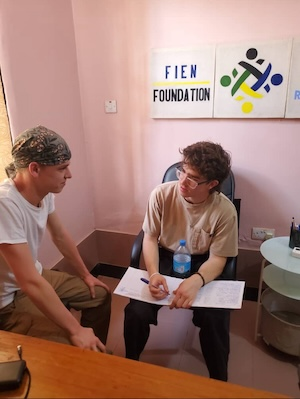

Intern with the FIEN Foundation
WEB DEVELOPMENT TECHNICIAN
Key Responsibilities of the Web Development Technician in our partner schools (elementary /middle schools):
- Development and Design: Creating visually appealing, user-friendly, and responsive website that reflect the school’s brand and values. This involves coding and markup languages such as HTML, CSS, JavaScript, and content management systems (CMS).
- Content Management: Ensuring the website has regularly updated content, including news, events, announcements, calendars, and academic information. This involves collaborating with school staff to collect and update appropriate content
- User Experience (UX): Ensuring the website offers an intuitive and seamless user experience, making it easy for students, parents, and staff to navigate and find the information they need. Conducting user testing and incorporating feedback to improve site functionality and usability
- Integrations and Tools: Implementing and maintaining various plugins, extensions, and tools necessary for the website, such as online forms, grade portals, and student information systems (SIS) integration
- Security and Maintenance: Ensuring the website is secure from potential threats and regularly maintaining and updating software, plugins, and themes to ensure optimal performance and security
- Assisting with additional tasks including mobile responsiveness, Search Engine Optimization (SEO), troubleshooting and support.
COMPUTER TECHNICIAN
Key Responsibilities of the Computer Technician in our partner schools (elementary /middle schools):
- Hardware Maintenance Across Multiple Locations: The technician will be responsible overseeing the physical hardware of the computer laboratories in two partner schools. This includes regular checks and maintenance of desktops, laptops, servers, printers, and other essential equipment. They will ensure that all hardware is operational, clean, and free of defects. Should any hardware malfunction or break down, the technician will perform repairs or arrange for replacements to minimize downtime in the classrooms. Additionally, the technician will monitor the condition of peripherals such as keyboards, mice, and monitors, ensuring that all devices are functioning properly.
- Software Management & Updates for Both Schools: Ensuring that all computers in the laboratories are running the latest operating systems and software is a critical aspect of the technician's role. They will be responsible for the timely installation of software updates and security patches across both schools' systems. This includes configuring and installing necessary applications, managing licenses, and ensuring that all programs are working efficiently for both educational and administrative purposes. The technician will also provide troubleshooting assistance to address any software-related issues that may arise during use.
- Network Management and Troubleshooting: As both partner schools rely on a network infrastructure for internet access and internal communication, the technician will manage and monitor the Local Area Networks (LAN) in the computer labs. They will ensure seamless connectivity by configuring routers, managing switches, and resolving any network issues. In case of network disruptions, the technician will troubleshoot and identify solutions to restore functionality, allowing students and teachers to access the necessary online resources without interruption.
- Virus & Malware Protection: The technician will implement and maintain security protocols to protect the computer systems in both laboratories from potential cyber threats. This includes installing and regularly updating antivirus software, performing scheduled scans to detect malware, and configuring firewalls to prevent unauthorized access. They will also educate staff and students on best practices for maintaining cybersecurity and avoiding common risks like phishing or malware downloads.
- Data Backup and Recovery for School Systems: A key responsibility is the regular backup of critical data, including student files, research documents, and administrative records, to prevent data loss in case of system failures. The technician will implement and manage backup solutions, both locally and in the cloud, for all essential data across both schools. Additionally, they will develop and implement data recovery protocols, ensuring that lost or corrupted data can be quickly restored.
- User Support and Technical Assistance: The technician will provide technical support for both students and staff across both partner schools. This may involve assisting students with troubleshooting login problems, helping teachers with classroom technology setup, and resolving any day-to-day technical issues that may arise in the laboratories. They will also provide guidance on how to effectively use the lab equipment, such as how to utilize educational software, connect to printers, or troubleshoot issues independently.
- Inventory Management and Procurement: The technician will manage the inventory of all hardware, software, and technological supplies across the two school locations. This includes tracking the use and condition of equipment, ensuring that necessary supplies like cables, ink, and paper are always available. Additionally, they will maintain records of the inventory, coordinate with the school administration for the procurement of new equipment, and ensure that both schools have up-to-date tools for their educational programs.
- Preventative Maintenance and System Monitoring: To avoid disruptions in the teaching and learning processes, the technician will proactively monitor the performance of the computer laboratories’ systems. They will implement a routine schedule of preventative maintenance, ensuring that systems run optimally by identifying and addressing issues such as slow performance, outdated software, or failing hardware. The technician will also monitor the general health of the systems and recommend hardware upgrades or replacements when necessary, ensuring the labs are always equipped to meet the technological needs of the students and staff.
- Collaborative Role Across Two Schools: The technician’s role will involve close collaboration with the Information and Computer Studies teachers of both partner schools. The technician will be expected to manage resources efficiently across two schools, traveling between the labs as needed to maintain systems and address urgent technical issues. They will also assist in setting up any special events, workshops, or projects that require technical support, ensuring that the technology infrastructure is ready and functioning for each occasion.
COMMUNICATION AND GRANT MANAGER
Key Responsibilities of a Communications and Grant Manager at FIEN Foundation:
-
Grant Writing and Fundraising
- Researching Funding Opportunities: Identifying potential funding sources (foundations, government grants, corporations, and individual donors) that align with the FIEN Foundation's mission.
- Writing and Submitting Grant Proposals: Crafting compelling and well-researched grant proposals that clearly articulate the organization's goals, the impact of the proposed project, and how the funds will be used.
- Grant Reporting and Compliance: Ensuring that all grant requirements are met, which may include submitting regular progress reports, financial updates, and any required documentation to funding organizations.
- Building and Maintaining Relationships with Donors and Funders: Developing strong relationships with existing and potential funders through regular communication and updates about the nonprofit’s programs, successes, and needs.
- Tracking and Monitoring Grants: Managing a calendar for grant deadlines, renewals, and reporting schedules, ensuring that all processes are completed on time and accurately.
-
Communications Strategy and Planning
- Developing a Comprehensive Communication Plan: Creating and implementing strategic plans for internal and external communication. This involves setting clear goals for media coverage, public outreach, and social media engagement.
- Branding and Messaging: Ensuring consistent messaging that aligns with the FIEN Foundation’s mission, values, and goals across all platforms, including the website, social media, and printed materials.
- Media Relations and Publicity: Developing relationships with journalists and media outlets to secure positive press coverage for the organization. Writing and distributing press releases, pitch letters, and other media communications.
- Content Creation: Writing and editing content for newsletters, blogs, social media, annual reports, and other promotional materials that engage donors, supporters, and the community.
- Social Media Management: Managing the organisation’s social media presence across platforms like Facebook, Twitter, Instagram, and LinkedIn. Creating engaging content that drives awareness, fosters community involvement, and promotes fundraising campaigns.
- Public Speaking and Representation: Representing the nonprofit at conferences, community events, and with other stakeholders. Delivering presentations about the organization’s work and impact to raise visibility and strengthen community engagement.
INFORMATION AND COMPUTER STUDIES (ICS) TEACHER
Key Responsibilities of Information and Computer Studies (ICS) Teacher in our partner schools (elementary /middle schools):
-
Teaching Fundamental IT Skills
- Computer Basics: Introduce students to the fundamentals of computer hardware and software, including how to use operating systems, file management, and basic computer applications (word processors, spreadsheets, etc.).
- Programming: Teach coding and programming concepts, often starting with beginner-friendly languages such as Scratch, Python, or JavaScript, and progressing to more complex languages and techniques.
- Networking and Internet: Provide instruction on how computers connect in networks, the basics of the internet, data security, and online safety practices.
- Data Management: Introduce students to database management systems, spreadsheets, and other tools for organizing and analyzing data.
-
Developing Digital Literacy
- Critical Thinking: Encourage students to think critically about how information is processed and represented in the digital world. This includes teaching them how to evaluate sources of information, detect misinformation, and understand the ethics of information technology.
- Online Behaviour and Safety: Educate students on safe and responsible online behavior, including topics such as cybersecurity, privacy, the ethical use of technology, and how to avoid online risks (cyberbullying, scams, etc.).
- Digital Communication: Help students understand how to effectively communicate online, whether it be through emails, social media, or digital presentations.
-
Curriculum Design and Development
- Creating Lesson Plans: Develop and implement lesson plans that reflect Tanzania’ curriculum for ICS in primary and secondary education, and cater to different learning styles and levels.
- Adapting to Curriculum Changes: Stay up to date with changes in technology and education policies to ensure the curriculum remains relevant. This might include integrating emerging technologies like AI, machine learning, or cloud computing into the classroom.
- Assessment and Evaluation: Assess students’ progress through various methods such as tests, projects, presentations, and practical assignments. Provide feedback that helps students improve their understanding of the subject.
Promoting Problem-Solving and Innovation
- Project-Based Learning: Encourage students to work on real-world projects where they can apply their learning, such as creating websites, developing apps, or solving computational problems.
- Innovation and Creativity: Foster an environment where students can explore new ideas, experiment with technology, and come up with innovative solutions to problems.
-
Collaboration and Communication
- Collaboration with Other Teachers: Work with other subject teachers to integrate ICT into other areas of the curriculum. For example, using spreadsheets in math lessons, creating presentations in language classes, or developing websites in art classes.
-
Classroom Management
- Maintaining Order and Focus: In a technology-rich environment, students can easily become distracted. It’s important to manage classroom activities so students stay focused on their tasks and use their devices responsibly.
- Creating an Inclusive Learning Environment: Ensure that all students, regardless of their learning abilities, have access to the resources they need to succeed in the course.
ENGLISH LANGUAGE TEACHER
Key responsibilities of English language Teacher in our partner schools (elementary /middle schools):
-
Planning and Presenting Lessons to Facilitate Students' Understanding and Application of English Language Skills
- Lesson Planning: Develop detailed and engaging lesson plans that align with the curriculum and are tailored to meet the needs of students aged 13-15. These lessons should focus on fostering students' reading, writing, listening, and speaking skills in English.
- Differentiation: Adapt lessons for diverse learning styles and abilities, ensuring that all students can effectively engage with the material. This may include using multimedia resources, group work, individual activities, and interactive tools.
- Active Participation: Use a variety of teaching strategies to encourage active participation in all four language skills. For example, incorporating role-play, debates, discussions, reading exercises, and writing assignments to enhance language acquisition.
- Language Application: Guide students in applying the English language skills they are learning to real-life scenarios, encouraging them to use English in a practical and meaningful context.
-
Preparing and Distributing Learning Materials
- Resource Creation: Design and prepare a variety of learning materials to support lesson objectives, including worksheets, notes, assignments, quizzes, flashcards, and online resources. These materials should be both informative and engaging, making learning enjoyable and effective for students.
- Diverse Learning Aids: Utilize different teaching aids such as visual materials (charts, posters), audio recordings, videos, and digital tools to cater to different learning preferences and reinforce language concepts.
- Assessment Design: Create well-structured assignments and quizzes that assess students’ progress in reading comprehension, writing skills, grammar, vocabulary, and spoken English.
-
Grading Assignments and Quizzes in a Timely Manner
- Timely Feedback: Assess students' assignments, quizzes, and tests promptly and return them with detailed feedback that helps them understand their strengths and areas for improvement.
- Formative Assessment: Use both formal and informal assessments to monitor students’ progress and adapt teaching strategies accordingly. This includes quizzes, oral presentations, writing exercises, and group work.
- Consistent Evaluation: Ensure that grading is fair, consistent, and aligned with established rubrics and learning objectives. Keep detailed records of students’ scores to track individual progress over time.
-
Promoting Student Engagement and Motivation
- Interactive Learning: Create opportunities for students to engage with the language in a fun and meaningful way. This could include activities such as group discussions, debates, language games, storytelling, and interactive projects.
- Cultural Awareness: Incorporate materials and lessons that introduce students to various cultures and perspectives, helping them understand the global context of the English language. Encourage students to explore English through different media (literature, films, music, etc.) to deepen their connection to the language.
- Student Autonomy: Encourage self-directed learning by promoting activities such as independent reading, writing journals, and language projects that allow students to explore topics of personal interest while improving their language skills.
-
Encouraging Critical Thinking and Communication Skills
- Promote Analytical Skills: Encourage students to analyze and critically engage with texts and spoken content. This could include activities that help students practice summarizing, interpreting, and critiquing written and spoken language.
- Creative Writing and Expression: Foster creativity in students by encouraging them to explore different writing styles, from narrative and descriptive writing to persuasive and argumentative forms. Provide opportunities for students to express themselves freely and creatively in English.
-
Supporting FIEN’s Language Proficiency Program
- The program aims to equip students with the necessary skills to comprehend, speak, read, and write fluently. By strengthening their command of English through Storytelling, Vocabulary Games, Writing Workshops (foster writing skills with creative exercises and peer reviews), Debates, Language Clubs (promote informal English practice through activities), and Peer-to-Peer Practice (encourage real-life communication through role-plays).
MATHEMATICS TEACHER
Key Responsibilities of Mathematics Teacher in our partner schools (elementary /middle schools):
-
Planning and Presenting Lessons to Facilitate Students' Understanding
- Lesson Planning: A mathematics teacher’s primary responsibility is to develop detailed, thoughtful lesson plans that align with the curriculum while addressing the diverse learning needs of students aged 13-15. Each lesson should be designed to engage students in meaningful ways, making abstract mathematical concepts more accessible and relatable to their everyday lives. These lessons should aim to build foundational skills, deepen students' understanding, and challenge them to think critically about mathematical principles. Teachers should also consider incorporating different teaching strategies, such as visual aids, real-world examples, hands-on activities, and technology, to cater to various learning styles and abilities within the classroom.
-
Incorporating Technology
- Mathematics teachers will leverage technology to enhance lesson delivery, including using educational software, interactive tools, and online resources to make complex mathematical concepts more accessible. They will incorporate virtual learning platforms, digital simulations, and educational videos to provide students with varied and engaging ways to interact with mathematical content.
-
Cultural Sensitivity and Inclusivity
- Mathematics teacher will recognize and respect the diverse cultural backgrounds, learning needs, and abilities of their students. He/ she will adapt teaching methods and materials to be inclusive, ensuring that all students, regardless of background or ability level, feel supported and capable of succeeding. Teachers will foster an environment where differences are celebrated, and every student is given equal opportunities to excel.
-
Encouraging Mathematical Exploration and Curiosity
- Mathematics teacher will inspire students to explore mathematical concepts beyond the curriculum, encouraging them to ask questions, engage in independent research, and participate in math-related extracurricular activities, such as math clubs or competitions. By fostering curiosity and a love for mathematics, teachers can help students develop a deeper understanding of the subject and see its relevance to real-world problems.
-
Promoting Collaboration and Group Work
- Mathematics teacher will create opportunities for students to collaborate with one another, either through group problem-solving activities, peer tutoring, or collaborative projects. This fosters teamwork, communication, and the ability to share ideas. By encouraging group work, teachers help students develop the social skills and confidence needed to work in teams and learn from one another.
-
Supporting Students' Transition to Higher-Level Mathematics
- Mathematics teacher will prepare students for future academic success by helping them build the skills necessary to transition smoothly to more advanced mathematics courses. This includes providing a solid foundation in key mathematical concepts, such as algebra, geometry, and calculus, and equipping students with the critical thinking and problem-solving abilities needed for higher-level studies in mathematics and related fields.
-
Promoting Ethical Use of Mathematics in Society
- Mathematics teacher will emphasize the real-world applications of mathematics and encourage students to think critically about how mathematical tools and concepts can be used to solve societal issues. Teachers will integrate discussions about ethical considerations in the use of mathematics, such as in data privacy, statistical analysis, and financial decision-making, preparing students to use mathematics responsibly in their future careers.
Donate
Donations help us provide health insurance to uninsured students
See our GoFundMe page here
